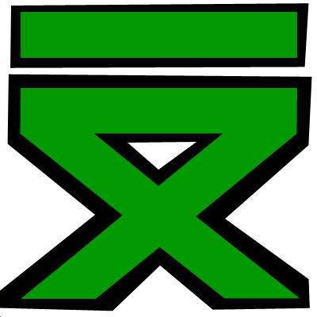

 BotM - The Twitch Chat Bot
BotM is a Twitch Bot that has been under development by LizardRock.
If you are a streamer with an interest in obtaining an early Alpha copy of the program.
you can download it here .
Features:
A Countdown in chat command (great for timed raids, or WonderTrade Streams)
Custom Commands
Sub Reactions
Online Update Checks
"Yo Mike"
Use Your Own Twitch Account (Custom Name)
Plug Command (to promote streams)
More to come!